Oliver Maus
- What are console apps?
-
How do .NET console apps work?
- .*proj files
- Framework-dependent vs. self-contained
- Single file vs. folder
-
How to create an F# console app in .NET
- Via .NET CLI
- Via Visual Studio
-
Building vs. publishing
- Via .NET CLI
- Via FAKE
- Via Visual Studio
-
How to extend console apps
- Argu
- Spectre.Console
- ConsoleToolMenu
- NLog
-
App conventions
Console apps are, as the name suggests, applications that run in a console. That is any command-line interface (CLI) that can serve as an output for such an application.
In Windows, these are the Command Prompt (CMD), PowerShell (PS), and � optionally � Windows Terminal (WT).
Console apps, in contrast to applications with graphical user interfaces (GUIs), in general, do not support the use of a mouse but instead focus solely on keyboard usage.
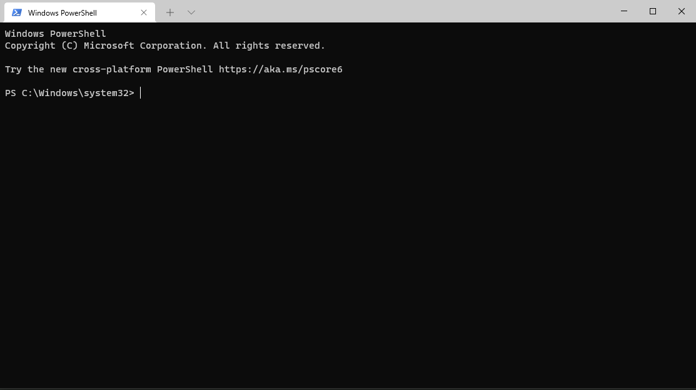
Your best friend.
Console apps are the easiest way to create an application with very little overhead, since most modern programming language frameworks offer support for creating them. Besides, the complexity of a simple console app is often a lot lower than a GUI-based application of the same functionality, and makes it much easier to create an easily accessible API by calling the console app through a CLI from another application.
The .NET ecosystem allows for its core languages C#, F#, and Visual Basic.NET to create console app barebones that work (roughly) the same. You can choose between requiring a .NET SDK installed on your system to execute them, or to have everything packed in a file or folder.
Through various ways, .NET allows for modifying your console app beyond the code that it works on (which we will cover later).
C#, F#, and Visual Basic.NET applications and libraries are realized as projects. The information about a project is stored in its project file. Depending on the language you use, those project file are either ending with .csproj, .fsproj, or .vbproj as file extension. These files are based on the XML standard and thus can be easily read and edited by developers themselves without the need of other tools to alter them.
The minimum project file for an F# console app:
<Project Sdk="Microsoft.NET.Sdk">
<PropertyGroup> <!--Contains all properties of the project-->
<OutputType>Exe</OutputType> <!--If this is not `Exe`, it won't be built into an executable file-->
<TargetFramework>net6.0</TargetFramework> <!--The framework version the project shall be based upon-->
</PropertyGroup>
<ItemGroup> <!--Contains all files to be compiled when building the project, in chronological order-->
<Compile Include="Program.fs" />
</ItemGroup>
</Project>
|
Every new console app starts with a "Program.fs" source file which only consists of a "Hello From F#" print command.
Of course you don't need to stick with this. You can rename this file and change the code as you like but you have to make sure that there's at least 1 source file present to be compiled.
It's important to know that when executing your app, the function called last will be the starting point of your program. In earlier versions of .NET, the compiler needed a starting point specified and it had to be a function itself (most often titled "main") but since .NET 6 this is not true anymore. Though, you can still use the "main function" approach.
The starting Program.fs in .NET 6:
// For more information see https://aka.ms/fsharp-console-apps
printfn "Hello from F#"
The starting Program.fs in .NET 5 and earlier:
// Learn more about F# at http://docs.microsoft.com/dotnet/fsharp
open System
// Define a function to construct a message to print
let from whom =
sprintf "from %s" whom
[<EntryPoint>]
let main argv =
let message = from "F#" // Call the function
printfn "Hello world %s" message
0 // return an integer exit code
As you can see, in .NET 5 and earlier the starting point is specified via the [<EntryPoint>] attribute. The argv parameter will be the arguments put behind the call of the executable in the CLI. Since this is not done per se in .NET 6, you need to capture it via a System.Console method:
The starting Program.fs in .NET 6 with inclusion and usage of the input arguments:
let userInput =
let args = System.Environment.GetCommandLineArgs() // first argument will always be the filepath to the executable
Array.skip 1 args
printfn "Hello from F# with userInput: %A" userInput
The starting Program.fs in .NET 5 and earlier with usage of the input arguments:
open System
let from whom =
sprintf "from %s" whom
[<EntryPoint>]
let main argv = // `argv` will always exclude the filepath to the executable
let message = from "F#"
printfn "Hello %s with userInput: %A" message argv
0
Both apps will result in the following output when calling them:
PS C:\testFolder\minimumConsoleAppNet6\bin\Debug\net6.0\win-x64\publish> .\minimumConsoleAppNet6.exe Hello, too!
PS C:\testFolder\minimumConsoleAppNet5\bin\Debug\net5.0\win-x64\publish> .\minimumConsoleAppNet5.exe Hello, too!
# output:
Hello from F# with userInput: [|"Hello"; "too!"|]
|
As written before, it is your choice of what is to be required when executing your console app. When deploying framework-dependent, the runtime (i.e. the .NET SDK) must be installed for your app to be executable. When deploying self-contained, the runtime is already packed into your app. Both options have their (dis)advantages: In a framework-dependent scenario, the user might need to install the .NET SDK on his device before being able to use your program. This can be annoying for the users of your app, depending on if they work with the .NET framework regularly or having nothing to do with it.
Self-contained executables need more space since they pack the runtime into them (hence the name). This also leads to the problem that the runtime is device-dependent: The .NET SDK for Linux differs from that for Windows which differs from that for MacOS, meaning that you must choose for which operating system (OS) you want to deploy your tool.
In the project file, the deployment type is written into the property group. If you choose self-contained, you need to specify the target runtime:
<Project Sdk="Microsoft.NET.Sdk">
<PropertyGroup>
<OutputType>Exe</OutputType>
<TargetFramework>net6.0</TargetFramework>
<SelfContained>true</SelfContained> <!--If this is set to false or is absent, deployment type will be framework-dependent-->
<RuntimeIdentifier>win-x64</RuntimeIdentifier> <!--The OS your app shall run on-->
</PropertyGroup>
<ItemGroup>
<Compile Include="Program.fs" />
</ItemGroup>
</Project>
|
For a list of runtimes you can deploy to, look here.
Default is that your console app will be deployed as an executable file inside a folder with all libraries and other files needed for the execution. Sometimes, especially when you don't have an installer for your application (which will mostly be the case) or you don't want your app users to handle ZIP archives, it might be a good choice to use single file-deployment. In that case, the whole folder content will be packed into a single file which itself will serve as an archive that gets extracted
- into the user's temp folder at runtime and then executed (.NET 5).
- directly into the memory and then executed (.NET 6).
Using the single file deployment comes at the cost of a slightly slower startup time due to the extraction process.
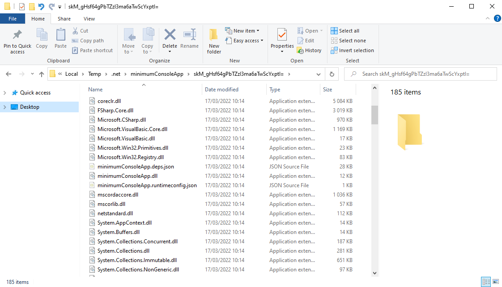
Our minimum console app in its extracted state (.NET 5).
This is what our project file for single file deployment would look like:
<Project Sdk="Microsoft.NET.Sdk">
<PropertyGroup>
<OutputType>Exe</OutputType>
<TargetFramework>net6.0</TargetFramework>
<PublishSingleFile>true</PublishSingleFile> <!--If this is set to false or is absent, deployment type will be folder-->
<IncludeAllContentForSelfExtract>true</IncludeAllContentForSelfExtract> <!--Only needed in .NET versions below 6 to generate "real" single files-->
<RuntimeIdentifier>win-x64</RuntimeIdentifier> <!--`<SelfContained>` is missing, since `<PublishSingleFile>` sets this to true, but the runtime identifier is still needed-->
</PropertyGroup>
<ItemGroup>
<Compile Include="Program.fs" />
</ItemGroup>
</Project>
|
Unfortunately, even for our small example app (which does nothing else than printing a single string), the required space is quite large (~ 65 MB). This is due to the large .NET SDK runtime shipped. Luckily, there are some features we can use to decrease the file size:
<Project Sdk="Microsoft.NET.Sdk">
<PropertyGroup>
<OutputType>Exe</OutputType>
<TargetFramework>net6.0</TargetFramework>
<PublishSingleFile>true</PublishSingleFile>
<RuntimeIdentifier>win-x64</RuntimeIdentifier>
<EnableCompressionInSingleFile>true</EnableCompressionInSingleFile> <!--Applies compression like in ZIP archives-->
<PublishTrimmed>true</PublishTrimmed> <!--Checks during compiletime (into CIL) for unused core libraries and classes and excludes them-->
</PropertyGroup>
<ItemGroup>
<Compile Include="Program.fs" />
</ItemGroup>
</Project>
|
<EnableCompression> decreases file size by about 50 %. This comes at the cost of a higher startup time.
<PublishTrimmed> decreases file size depending on the number of unused libraries and classes but compiletime is noticeably increased. Since this feature is still in beta stage, it is possible that the resulting app does not start or fails under special circumstances, though this seems rarely to be the case (I personally never encountered it).
There are a lot (!) of different properties you can set in your project file. I won't cover all of them here, but here are a few other things that might be important to you:
<Project Sdk="Microsoft.NET.Sdk">
<PropertyGroup>
<OutputType>Exe</OutputType>
<TargetFramework>net6.0</TargetFramework>
<PublishSingleFile>true</PublishSingleFile>
<RuntimeIdentifier>win-x64</RuntimeIdentifier>
<CultureInvariant>true</CultureInvariant> <!--Depending on the regional settings of your system, you might get problems with different signs (`,`, `.`, and so on)-->
<!--Due to this, it is best practice to set `<CultureInvariant>` to true, so that you don't have to expect parsing errors-->
<InvariantGlobalization>true</InvariantGlobalization> <!--Comparable to the setting above-->
<ServerGarbageCollection>true</ServerGarbageCollection> <!--Important to set this to true if you don't want to expect performance problems due to garbage collection-->
<Version>0.0.1</Version> <!--There are 3 version settings: `<Version>`, `AssemblyVersion>, and `FileVersion`. `<Version>` is an informal version tag of your application-->
<AssemblyVersion>0.0.1.0</AssemblyVersion> <!--`<AssemblyVersion>` is the version tag that you can access to while using your app via `System.Reflection.Assembly.GetExecutingAssembly()`-->
<FileVersion>0.0.1.0</FileVersion> <!--This is the version tag that you can see when rightclicking on your app and looking at the properties. It defaults to 1.0.0.0-->
<!--Keep in mind that the versioning follows the `(Major).(Minor).(Build).(Revision)` pattern (except `<Version>` tag)-->
</PropertyGroup>
<ItemGroup>
<Compile Include="Program.fs" />
</ItemGroup>
</Project>
|
(Further reading)
There are several ways to start a console app written in F#. As prerequisite you need to have the .NET SDK installed.
With the .NET SDK installed, you already are able to create a console app barebone into your folder with any CLI using the following command:
dotnet new console -lang "F#" --framework net6.0 # or any other .NET version you want to use
|
You can also specify an output path (-o [yourPath]) and a name (-n [desiredName]).
The console app will consist of the project file (as seen above) and the Program.fs file.
Open a new Visual Studio instance:
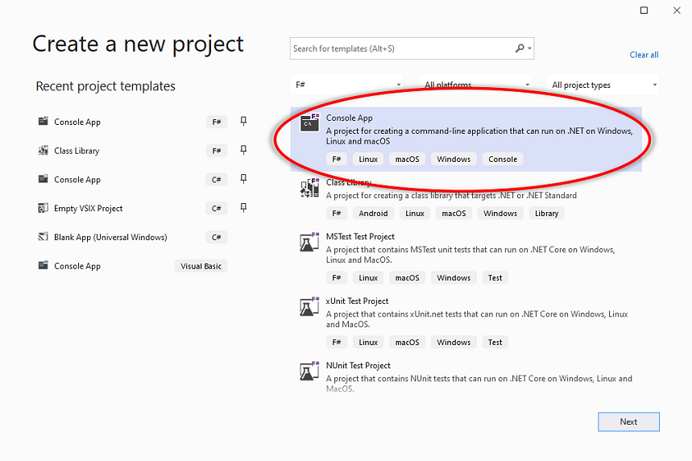
Select F# Console Application. If not present, filter for F# language.
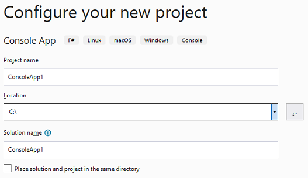
Choose name and location of your console app.
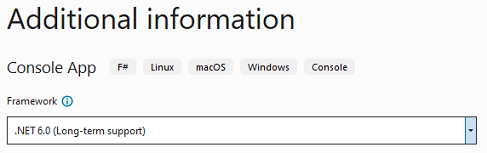
Choose your target .NET version.
When creating a file from the project, MSBuild (the Microsoft Build Engine) takes the information from the project file to determine what and how to build. But you are not restricted to that. Most of the MSBuild information can be given directly when deploying the app (see below).
As compiling methods you can choose between building and publishing. When building, all files and dependencies get compiled and an executable will be created. When publishing, building will be executed but on top it will be taken into account that the result shall be used as a whole (in the shape of a file or a folder), thus putting everything together and making it deployable. For normal, you build libraries to use them and build console apps to test them but you publish console apps when you want to distribute them. Since publishing is special to apps in general (but not to libraries), we will focus on it in the following.
Using a CLI, publishing your project works as follows:
when executed in the folder where project file is located, otherwise the path to the project file containing folder or to the project file itself must be given:
dotnet publish C:\testFolder\minimumConsoleAppNet6
dotnet publish C:\testFolder\minimumConsoleAppNet6\minimumConsoleAppNet6.fsproj
# relative paths are possible too
|
As written earlier, you can give a lot of arguments into MSBuild, e.g.:
dotnet publish -o [path] # output directory
dotnet publish -f [framework] # target framework, e.g. `net6.0`
dotnet publish -r [rID] # target runtime, `[rID]` being the runtime identifier, as seen in the project file above
dotnet publish --self-contained [true]/[false]
dotnet publish -p:[propName]=[value] # `[propName]` is the name of the property you want to set, [value] the value you want to set it to, e.g.
dotnet publish -p:PublishSingleFile=true
|
For a full list of commands, look here.
FAKE is a nice tool that aids with automatizing building, publishing and deploying. It also allows to chain Unit Tests while doing so.
If you already have a FAKE build script ready, it is very easy to extend it with a publishing task:
(If not, you might want to look into the FAKE build scripts we use in our repositories)
// we start with a simple build
let publishBinariesWin = BuildTask.create "PublishBinariesWin" [clean.IfNeeded; build.IfNeeded] {
let outputPath = sprintf "%s/win-x64" publishDir
solutionFile
|> DotNet.publish (fun p ->
// and then call MSBuild to run with the arguments we parse into it:
let standardParams = Fake.DotNet.MSBuild.CliArguments.Create ()
{
p with
// set some of the properties...
Runtime = Some "win-x64"
Configuration = DotNet.BuildConfiguration.fromString configuration
OutputPath = Some outputPath
MSBuildParams = {
standardParams with
Properties = [ // here you can set all the properties that were not treated before
"Version", stableVersionTag
"Platform", "x64"
"PublishSingleFile", "true"
]
};
}
)
}
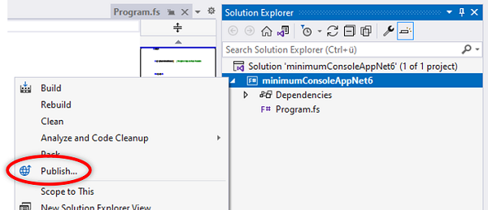
Right click on your project file in the solution explorer and choose "Publish...".
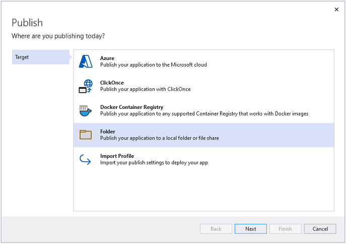
Choose your desired output target (e.g. "Folder" if you like to get your executable file in a folder).
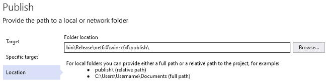
Set the output path.
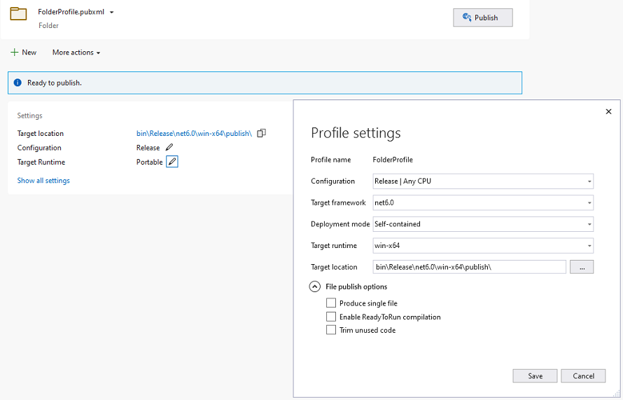
By clicking on "Show all settings" you can apply additional settings like deployment type, target runtime, etc. Finish the publishing via clicking on "Publish" at the top.
You now know how to create and deploy console apps but of course you want more than just printing Hello to the World.
The most common extension of your current console app (besides adding code) is the addition of further source files. You can either just create the file in the project folder and add it to the project file...
<Project Sdk="Microsoft.NET.Sdk">
<PropertyGroup>
<OutputType>Exe</OutputType>
<TargetFramework>net6.0</TargetFramework>
</PropertyGroup>
<ItemGroup>
<Compile Include="SecondSourceFile.fs" />
<Compile Include="Program.fs" />
</ItemGroup>
</Project>
|
...or use the Visual Studio interface for that:
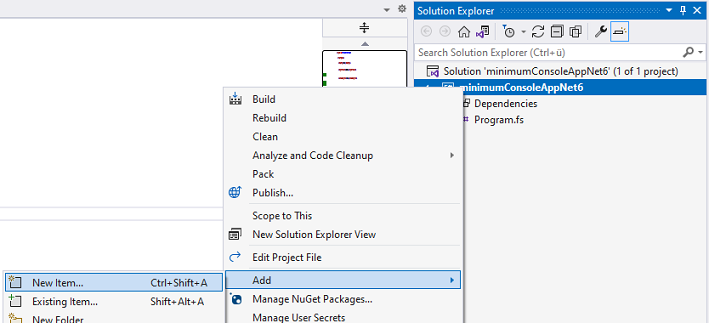
Keep in mind that your executing source file (most often Program.fs) must be at the last position!
What will also often be the case, is that you will want to use external libraries inside your tool. NuGet is the best source for that. To add a NuGet package to your app, you can either add the line for it to the project file, or use the .NET CLI or Visual Studio for doing so:
dotnet add package [packageName] # with `[packageName]` being, e.g., `FSharpAux`
|
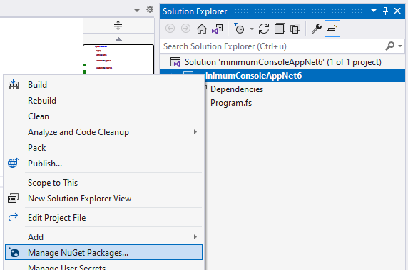
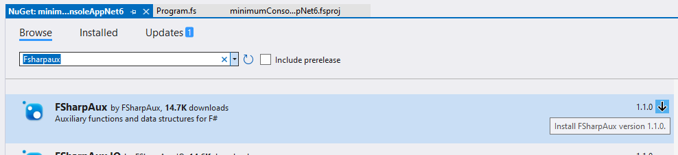
The resulting project file:
<Project Sdk="Microsoft.NET.Sdk">
<PropertyGroup>
<OutputType>Exe</OutputType>
<TargetFramework>net6.0</TargetFramework>
</PropertyGroup>
<ItemGroup>
<Compile Include="Program.fs" />
</ItemGroup>
<ItemGroup>
<PackageReference Include="FSharpAux" Version="1.1.0" />
</ItemGroup>
</Project>
|
There are a few very helpful libraries for console apps that I want to show you in the following.
Argu is a library which facilitates the creation of command-line argument parsing a lot for you. It allows you to create commands and infinitely nestable subcommands for your console app. It comes with built-in error parsing and creating a simple help-command that grows along the commands you add.
Due to its implementation in F#, it is especially simple to in F# console apps.
open Argu
// Union type for a kind of command
type MainCommands =
// each field is a command. Specific properties are realized via attributes
| [<CliPrefix(CliPrefix.None)>] PrintHWFs
| [<CliPrefix(CliPrefix.None)>] PrintHWfrom of person : string
// the `ParseResults<yourType>` type makes subcommands possible (see below)
| [<CliPrefix(CliPrefix.None)>][<AltCommandLine("-e")>] PrintHWextended of ParseResults<SubCommands>
// the `IArgParserTemplates` allows for adding usage descriptions which are shown when calling `--help` or giving a wrong input argument
interface IArgParserTemplate with
member this.Usage =
match this with
| PrintHWFs -> "Print Hello World"
| PrintHWfrom _ -> "Print Hello World from someone"
| PrintHWextended _ -> "Print Hello World from someone to someone"
and SubCommands =
| To of person : string
| FromTo of sender : string * receiver : string
interface IArgParserTemplate with
member this.Usage =
match this with
| To _ -> "Receiver of the message"
| FromTo _ -> "Sender and receiver of the message"
// initialization of the parser
let parser = ArgumentParser.Create<MainCommands>()
[<EntryPoint>]
let main argv =
try
// parse the user's command-line arguments
let pr = parser.ParseCommandLine(inputs = argv, raiseOnUsage = true)
// return the results
let ar = pr.GetAllResults()
// this is the actual control flow: What shall happen if the user gives what argument, what second argument, and so on
match ar.Length with
| 0 -> printfn "No input."
| _ ->
ar
|> List.iter (
fun r ->
match r with
| PrintHWFs -> printfn "Hello World from F#!"
| PrintHWfrom p -> printfn $"Hello World from {p}!"
| PrintHWextended p ->
p.GetAllResults()
|> List.iter (
fun r2 ->
match r2 with
| To p2 -> printfn $"Hello World from F# to {p2}!"
| FromTo (p2,p3) -> printfn $"Hello World from {p2} to {p3}!"
)
)
with e -> printfn "%A" e
0
Notable examples:
Another library extending command-line argument parsing is Spectre.Console. Compared to Argu, it is less intuitive to use in an F# project due to its object-oriented (OO) design. Aside from that, it comes with a load of extra features like table depiction, tree construction, live updates, charts, and even pixel drawings!
Setting a table:
open System
open System.IO
open System.Threading
open Spectre.Console
open FSharpAux
[<EntryPoint>]
let main _ =
// a test file for our purposes
let table =
let file = File.ReadAllLines(Path.Combine("c:", "testFolder", "table.tsv"))
file
|> Array.map (
fun s -> s.Split('\t')
)
|> array2D
// initialize a new table and set the border style
let spectreTable = new Table()
spectreTable.Border <- TableBorder.HeavyHead
let cols = table[0,0 ..]
let rows = table[1 ..,0 ..]
// apply some markup to our strings
let markupdCols = cols |> Array.map (fun s -> ($"[bold][italic]{s}[/][/]"))
let markupdRows =
rows
|> Array2D.mapColI (
fun iCol s ->
if iCol = 4 then
match int s with
| x when x > 80 -> $"[red]{s}[/]"
| x when x <= 80 -> $"[green]{s}[/]"
| _ -> failwith "cannot happen"
else s
)
// add columns and rows to the table
spectreTable.AddColumns(markupdCols) |> ignore
for i = 0 to rows.GetLength(0) - 1 do
spectreTable.AddRow(markupdRows.[i,0 ..])
|> ignore
spectreTable.Title <- TableTitle("Musterpeople")
// display the table
AnsiConsole.Write(spectreTable)
Construct a tree:
type Dir = {
Name : string
Subdirs : Dir []
Files : FileInfo []
}
[<EntryPoint>]
let main _ =
// special markup for special files
let matchFileExt f =
match f with
| x when String.contains(".jpg") x -> $"[orange1]{f}[/]"
| x when String.contains(".png") x -> $"[gold1]{f}[/]"
| x when String.contains(".txt") x -> f
| x when String.contains(".xlsx") x -> $"[green]{f}[/]"
| x when String.contains(".pub") x -> $"[darkslategray3]{f}[/]"
| x when String.contains(".rtf") x -> $"[blue]{f}[/]"
| _ -> f
let rec constructDir path = {
Name = (DirectoryInfo path).Name
Files = Directory.GetFiles(path) |> Array.map FileInfo
Subdirs =
Directory.GetDirectories(path)
|> Array.map constructDir
}
let topDir = constructDir @"C:\testFolder\testDir"
// add a node with every new file and folder but only check folders for files and subfolders
let rec addNode (node : TreeNode) dir =
dir.Subdirs |> Array.map (fun di -> addNode (node.AddNode(di.Name)) di) |> ignore
dir.Files |> Array.map (fun fi -> node.AddNode(fi.Name |> matchFileExt)) |> ignore
node
// initialize tree and style it
let root = Tree(topDir.Name)
root.Style <- Style(Color.Red1)
root.Guide <- TreeGuide.Line
// add the nodes
root.AddNodes(topDir.Files |> Array.map (fun fi -> fi.Name |> matchFileExt))
topDir.Subdirs
|> Array.map (
fun di ->
addNode (root.AddNode(di.Name)) di
)
|> ignore
AnsiConsole.Write(root)
Building a Bar Chart:
[<EntryPoint>]
let main _ =
let noOfContributionsIn2021 =
[|("muehlhaus", 158); ("geodels", 0); ("MikhayN", 0); ("HLWeil", 463);
("ZimmerD", 273); ("kMutagene", 1858); ("bvenn", 260); ("Etschbeijer", 0);
("bellacapilla", 0); ("Joott", 754); ("Freymaurer", 710); ("SchuckL", 0);
("omaus", 609); ("ZimmerA", 352); ("LibraChris", 121); ("CMR248", 122);
("JessicaFaryadMarani", 0); ("zieglerSe", 18); ("Falkenei", 7);
("vLeidel", 0)|]
|> Array.filter (fun (person,conts) -> conts > 0)
|> Array.sortByDescending snd
let colors = [|
Color.Red
Color.Gold1
Color.Lime
Color.Yellow
Color.Blue
Color.Fuchsia
Color.Silver
Color.Teal
Color.Olive
Color.Maroon
Color.White
Color.LightSteelBlue1
Color.LightPink1
Color.Green
Color.Aqua
|]
let rnd = Random()
// initialize bar chart with style
let barChart = BarChart()
barChart.Width <- 100
barChart.Label <- "[underline]No. of GitHub contributions (in 2021)[/]"
barChart.CenterLabel() |> ignore
// add a bar with a new color (and make sure the color is unique)
let rec addWithColor i usedColors =
let color = colors |> Array.shuffleFisherYates rnd |> Array.head
let cond1 = i < noOfContributionsIn2021.Length
let cond2 = List.contains color usedColors
if cond1 && not cond2 then
barChart.AddItem(
noOfContributionsIn2021[i] |> fst,
noOfContributionsIn2021[i] |> snd |> float,
color
)
|> ignore
addWithColor (i + 1) (color :: usedColors)
elif List.contains color usedColors then
addWithColor i usedColors
addWithColor 0 []
AnsiConsole.Write(barChart)
(Re)Drawing a picture:
[<EntryPoint>]
let main _ =
let bm = new System.Drawing.Bitmap(@"C:\testFolder\testDir\sp.png")
let xMax = bm.Width - 1
let yMax = bm.Height - 1
// initialize a canvas with width and height
let cnvs = Canvas(xMax + 1,yMax + 1)
for y = 0 to yMax do
for x = 0 to xMax do
let px = bm.GetPixel(x,y)
let col = Color(px.R, px.G, px.B)
// set pixel after pixel for our picture
cnvs.SetPixel(x,y,col)
|> ignore
AnsiConsole.Write(cnvs)
Console.WriteLine()
Starting a live update:
[<EntryPoint>]
let main _ =
// initialize a status report
AnsiConsole.Status().Start(
// first message
"Initiating looong list...",
fun stCtxt ->
// do our stuff
List.init 100000000 id |> ignore
// update message after task is done
stCtxt.Status <- "Done."
Thread.Sleep(1000)
)
A library written by myself that shall provide a simple text-based interface. Its purpose lies especially in offering easy-to-create menu-like structures via the creation of Options that can be infinitely nested and assembled with actions that get called when choosing a bullet point.
open ConsoleToolMenu
open ConsoleToolMenu.Functions
// initialize the options you want to have
let options = [|
// each option consists of a name and an action that gets triggered when the option is chosen
Option.create "Option 1" (fun _ -> printfn "Option 1 was chosen")
Option.create "Option 2" (fun _ -> printfn "Option 2 was chosen")
// options can serve as folders, inhabiting other options
Option.createFolder
"Option 3"
(fun _ -> printfn "Option 3 was chosen")
(Array.map2
Option.create
[|"SubOption1"; "SubOption2"|]
[|(fun _ -> printfn "SubOption 1 was chosen"); fun _ -> printfn "SubOption 2 was chosen"|]
)
Option.createFolder
"Option 4"
(fun _ -> ())
[|Option.createFolder
"SubOption 1b" (fun () -> ()) [|
Option.create "SubSubOption 1" (fun _ -> printfn "SubSubOption 1 chosen")
|]
|]
|]
// choose the look of your cursor
let cursor = SelectionPointer.create '>'
// add messages for start and end
let startMsg = "Hello there"
let endMsg = "Goodbye there"
// start the menu. Use Up and Down arrow keys, and Enter and Escape to navigate
start cursor startMsg endMsg options
Logging is an important part of any bigger application. It makes debugging and app usage documentation much easier and logging libraries also often offer customization of the console appearance to some extent.
One of the largest logging libraries in the .NET ecosystem is NLog. It allows for writing to several targets (files and the console itself, e.g.) and can be customized via an XML-settings file or directly in code.
Like Spectre.Console, it is a C# library which means we have to use it in an OO way.
open System.IO
open NLog
open NLog.Config
open NLog.Targets
open NLog.Conditions
// we start with initializing the base config object which can be modified
let config = new LoggingConfiguration()
// we initialize the first console target
let consoleTarget1 = new ColoredConsoleTarget("console")
// and set its layout to a new one we created. The string is parsed internally similar to how interpolated strings work
let layoutConsole1 = new Layouts.SimpleLayout(@"${message} ${exception}")
consoleTarget1.Layout <- layoutConsole1
// a second target that differs from the first one
let consoleTarget2 = new ColoredConsoleTarget("console")
let layoutConsole2 = new Layouts.SimpleLayout(@"${level:uppercase=true} ${message} ${exception}")
consoleTarget2.Layout <- layoutConsole2
// a file target, for writing into a text file
let fileTarget = new FileTarget("file")
let folderPath = Path.Combine("C:", "testFolder", "minimumConsoleAppNet6")
// we set filename and layout for the file target
let fileName = new Layouts.SimpleLayout(Path.Combine (folderPath, @"minimumConsoleAppNet6.log"))
let layoutFile = new Layouts.SimpleLayout("${longdate} ${level:uppercase=true} ${message} ${exception}")
fileTarget.FileName <- fileName
fileTarget.Layout <- layoutFile
// the targets are added to the config object
config.AddTarget(consoleTarget1)
config.AddTarget(consoleTarget2)
config.AddTarget(fileTarget)
// we define rules for colors that shall differ from the default color theme (which is black background, grey font)
let warnColorRule = new ConsoleRowHighlightingRule()
warnColorRule.Condition <- ConditionParser.ParseExpression("level == LogLevel.Warn")
warnColorRule.ForegroundColor <- ConsoleOutputColor.Yellow
let errorColorRule = new ConsoleRowHighlightingRule()
errorColorRule.Condition <- ConditionParser.ParseExpression("level == LogLevel.Error")
errorColorRule.ForegroundColor <- ConsoleOutputColor.Red
let fatalColorRule = new ConsoleRowHighlightingRule()
fatalColorRule.Condition <- ConditionParser.ParseExpression("level == LogLevel.Fatal")
fatalColorRule.ForegroundColor <- ConsoleOutputColor.Red
fatalColorRule.BackgroundColor <- ConsoleOutputColor.DarkYellow
// now we add the newly defined rules to the console target
consoleTarget2.RowHighlightingRules.Add(warnColorRule)
consoleTarget2.RowHighlightingRules.Add(errorColorRule)
consoleTarget2.RowHighlightingRules.Add(fatalColorRule)
// we declare which message of a log level goes to which target
config.AddRuleForOneLevel(LogLevel.Info, consoleTarget1)
config.AddRuleForOneLevel(LogLevel.Info, fileTarget)
config.AddRuleForOneLevel(LogLevel.Trace, fileTarget) // here, we only write Trace and Debug log level into the file but don't show them in the console
config.AddRuleForOneLevel(LogLevel.Debug, fileTarget)
config.AddRuleForOneLevel(LogLevel.Warn, consoleTarget2)
config.AddRuleForOneLevel(LogLevel.Warn, fileTarget)
config.AddRuleForOneLevel(LogLevel.Error, consoleTarget2)
config.AddRuleForOneLevel(LogLevel.Error, fileTarget)
config.AddRuleForOneLevel(LogLevel.Fatal, consoleTarget2)
config.AddRuleForOneLevel(LogLevel.Fatal, fileTarget)
// set the config for the logger
LogManager.Configuration <- config
// finally, we bind a logger of the name "NLog logger" to the name log which we will use afterwards
let log = LogManager.GetLogger("NLog logger")
Notice that we have to apply rules for each log level. The different log levels stand for different things you want to address with. Info is comparable to a normal print command, Debug and Trace serve for debugging purposes while Warn, Error, and Fatal shall capture problematic events.
[<EntryPoint>]
let main _ =
log.Info("Info Message")
log.Trace("Trace Message")
log.Debug("Debug Message")
log.Warn("Warn Message")
try 1 / 0 with e -> log.Error(e, $"Error Message:\n"); 0
|> ignore
log.Fatal("Fatal Message")
0
Notable examples:
Stylewise, there are a few things to know:
-
When tackling the naming of commands and subcommands, try to stick closely to easy to follow names. Look at the dotnet CLI or the Git CLI for impressions
- This is especially important when designing your app API-wise
--[word] or -[letter] for argument specifiers (as in Argu!)-
Not directly related to APIs, but it is common to return an exit integer:
- 0 for successfull termination
- 1 to 255 for any error
- Do this via returning the exit code as the last integer (see .NET 5 Program.fs example above) or use
System.Environment.Exit(code)
- Try to keep your executing source file (default: Program.fs) as clean as possible. Like when working with libraries, try not to pack all the code into 1 source file but instead distribute it according to functionality into modules and classes within respective source files
The following does not solely apply to console apps but to all applications in general:
More complex apps might need to read or save config or user-specific data. Best practice is to follow common standards for doing so, like XDG Base Directory Specification which is based on Linux or directories which is platform-independent.
val printfn : format:Printf.TextWriterFormat<'T> -> 'T
<summary>Print to <c>stdout</c> using the given format, and add a newline.</summary>
<param name="format">The formatter.</param>
<returns>The formatted result.</returns>
namespace System
val sprintf : format:Printf.StringFormat<'T> -> 'T
<summary>Print to a string using the given format.</summary>
<param name="format">The formatter.</param>
<returns>The formatted result.</returns>
Multiple items
type EntryPointAttribute =
inherit Attribute
new : unit -> EntryPointAttribute
<summary>Adding this attribute to a function indicates it is the entrypoint for an application.
If this attribute is not specified for an EXE then the initialization implicit in the
module bindings in the last file in the compilation sequence are used as the entrypoint.</summary>
<category>Attributes</category>
--------------------
new : unit -> EntryPointAttribute
type Environment =
static member Exit : exitCode: int -> unit
static member ExpandEnvironmentVariables : name: string -> string
static member FailFast : message: string -> unit + 1 overload
static member GetCommandLineArgs : unit -> string []
static member GetEnvironmentVariable : variable: string -> string + 1 overload
static member GetEnvironmentVariables : unit -> IDictionary + 1 overload
static member GetFolderPath : folder: SpecialFolder -> string + 1 overload
static member GetLogicalDrives : unit -> string []
static member SetEnvironmentVariable : variable: string * value: string -> unit + 1 overload
static member CommandLine : string
...
<summary>Provides information about, and means to manipulate, the current environment and platform. This class cannot be inherited.</summary>
System.Environment.GetCommandLineArgs() : string []
module Array
from Microsoft.FSharp.Collections
<summary>Contains operations for working with arrays.</summary>
<remarks>
See also <a href="https://docs.microsoft.com/dotnet/fsharp/language-reference/arrays">F# Language Guide - Arrays</a>.
</remarks>
val skip : count:int -> array:'T [] -> 'T []
<summary>Builds a new array that contains the elements of the given array, excluding the first N elements.</summary>
<param name="count">The number of elements to skip.</param>
<param name="array">The input array.</param>
<returns>A copy of the input array, after removing the first N elements.</returns>
<exception cref="T:System.ArgumentNullException">Thrown when the input array is null.</exception>
<exception cref="T:System.ArgumentExcepion">Thrown when count is negative or exceeds the number of
elements in the array.</exception>
val publishBinariesWin : obj
union case Option.Some: Value: 'T -> Option<'T>
<summary>The representation of "Value of type 'T"</summary>
<param name="Value">The input value.</param>
<returns>An option representing the value.</returns>
namespace Argu
Multiple items
module CliPrefix
from Argu
<summary>
Predefined CLI prefixes to be added
</summary>
--------------------
type CliPrefixAttribute =
inherit Attribute
new : prefix:string -> CliPrefixAttribute
member Prefix : string
<summary>
Specifies a custom prefix for auto-generated CLI names.
This defaults to double dash ('--').
</summary>
--------------------
new : prefix:string -> CliPrefixAttribute
val None : string = ""
<summary>
No Cli Prefix
</summary>
union case MainCommands.PrintHWFs: MainCommands
union case MainCommands.PrintHWfrom: person: string -> MainCommands
Multiple items
val string : value:'T -> string
<summary>Converts the argument to a string using <c>ToString</c>.</summary>
<remarks>For standard integer and floating point values the and any type that implements <c>IFormattable</c><c>ToString</c> conversion uses <c>CultureInfo.InvariantCulture</c>. </remarks>
<param name="value">The input value.</param>
<returns>The converted string.</returns>
--------------------
type string = System.String
<summary>An abbreviation for the CLI type <see cref="T:System.String" />.</summary>
<category>Basic Types</category>
Multiple items
type AltCommandLineAttribute =
inherit Attribute
new : [<ParamArray>] names:string [] -> AltCommandLineAttribute
member Names : string []
<summary>
Declares a set of secondary CLI identifiers for the current parameter.
Does not replace the default identifier which is either auto-generated
or specified by the CustomCommandLine attribute.
</summary>
--------------------
new : [<System.ParamArray>] names:string [] -> AltCommandLineAttribute
union case MainCommands.PrintHWextended: ParseResults<SubCommands> -> MainCommands
type ParseResults<'Template (requires 'Template :> IArgParserTemplate)> =
interface IComparable
interface IParseResult
private new : argInfo:UnionArgInfo * results:UnionParseResults * programName:string * description:string option * usageStringCharWidth:int * exiter:IExiter -> ParseResults<'Template>
member Catch : f:(unit -> 'T) * ?errorCode:ErrorCode * ?showUsage:bool -> 'T
member Contains : expr:Expr<'Template> * ?source:ParseSource -> bool + 1 overload
override Equals : other:obj -> bool
member GetAllResults : ?source:ParseSource -> 'Template list
override GetHashCode : unit -> int
member GetResult : expr:Expr<'Template> * ?defaultValue:'Template * ?source:ParseSource -> 'Template + 1 overload
member GetResults : expr:Expr<'Template> * ?source:ParseSource -> 'Template list + 1 overload
...
<summary>
Argument parsing result holder.
</summary>
type SubCommands =
| To of person: string
| FromTo of sender: string * receiver: string
interface IArgParserTemplate
type IArgParserTemplate =
abstract member Usage : string
<summary>
Interface that must be implemented by all Argu template types
</summary>
val this : MainCommands
union case SubCommands.To: person: string -> SubCommands
union case SubCommands.FromTo: sender: string * receiver: string -> SubCommands
val this : SubCommands
val parser : ArgumentParser<MainCommands>
Multiple items
type ArgumentParser =
private new : argInfo:UnionArgInfo * _programName:string * helpTextMessage:string option * _usageStringCharacterWidth:int * errorHandler:IExiter -> ArgumentParser
abstract member Accept : visitor:IArgumentParserVisitor<'R> -> 'R
member GetArgumentCases : unit -> ArgumentCaseInfo list
member GetSubCommandParsers : unit -> ArgumentParser list
member PrintCommandLineSyntax : ?programName:string * ?usageStringCharacterWidth:int -> string
member PrintUsage : ?message:string * ?programName:string * ?hideSyntax:bool * ?usageStringCharacterWidth:int -> string
static member Create : ?programName:string * ?helpTextMessage:string * ?usageStringCharacterWidth:int * ?errorHandler:IExiter * ?checkStructure:bool -> ArgumentParser<#IArgParserTemplate>
member ErrorHandler : IExiter
member HelpDescription : string
member HelpFlags : string list
...
<summary>
The Argu type generates an argument parser given a type argument
that is an F# discriminated union. It can then be used to parse command line arguments
or XML configuration.
</summary>
--------------------
type ArgumentParser<'Template (requires 'Template :> IArgParserTemplate)> =
inherit ArgumentParser
private new : argInfo:UnionArgInfo * _programName:string * helpTextMessage:string option * _usageStringCharacterWidth:int * errorHandler:IExiter -> ArgumentParser<'Template> + 1 overload
override Accept : visitor:IArgumentParserVisitor<'a1> -> 'a1
member GetArgumentCaseInfo : value:'Template -> ArgumentCaseInfo + 1 overload
member GetSubCommandParser : expr:Expr<(ParseResults<'SubTemplate> -> 'Template)> -> ArgumentParser<'SubTemplate> (requires 'SubTemplate :> IArgParserTemplate)
member GetTag : value:'Template -> int
member Parse : ?inputs:string [] * ?configurationReader:IConfigurationReader * ?ignoreMissing:bool * ?ignoreUnrecognized:bool * ?raiseOnUsage:bool -> ParseResults<'Template>
member ParseCommandLine : ?inputs:string [] * ?ignoreMissing:bool * ?ignoreUnrecognized:bool * ?raiseOnUsage:bool -> ParseResults<'Template>
member ParseConfiguration : configurationReader:IConfigurationReader * ?ignoreMissing:bool -> ParseResults<'Template>
member PrintAppSettingsArguments : args:'Template list * ?printComments:bool -> string
...
<summary>
The Argu type generates an argument parser given a type argument
that is an F# discriminated union. It can then be used to parse command line arguments
or XML configuration.
</summary>
--------------------
new : ?programName:string * ?helpTextMessage:string * ?usageStringCharacterWidth:int * ?errorHandler:IExiter * ?checkStructure:bool -> ArgumentParser<'Template>
static member ArgumentParser.Create : ?programName:string * ?helpTextMessage:string * ?usageStringCharacterWidth:int * ?errorHandler:IExiter * ?checkStructure:bool -> ArgumentParser<#IArgParserTemplate>
type MainCommands =
| PrintHWFs
| PrintHWfrom of person: string
| PrintHWextended of ParseResults<SubCommands>
interface IArgParserTemplate
val main : argv:string [] -> int
val argv : string []
val pr : ParseResults<MainCommands>
member ArgumentParser.ParseCommandLine : ?inputs:string [] * ?ignoreMissing:bool * ?ignoreUnrecognized:bool * ?raiseOnUsage:bool -> ParseResults<'Template>
val ar : MainCommands list
member ParseResults.GetAllResults : ?source:ParseSource -> 'Template list
property List.Length: int with get
<summary>Gets the number of items contained in the list</summary>
Multiple items
module List
from Microsoft.FSharp.Collections
<summary>Contains operations for working with values of type <see cref="T:Microsoft.FSharp.Collections.list`1" />.</summary>
<namespacedoc><summary>Operations for collections such as lists, arrays, sets, maps and sequences. See also
<a href="https://docs.microsoft.com/dotnet/fsharp/language-reference/fsharp-collection-types">F# Collection Types</a> in the F# Language Guide.
</summary></namespacedoc>
--------------------
type List<'T> =
| ( [] )
| ( :: ) of Head: 'T * Tail: 'T list
interface IReadOnlyList<'T>
interface IReadOnlyCollection<'T>
interface IEnumerable
interface IEnumerable<'T>
member GetReverseIndex : rank:int * offset:int -> int
member GetSlice : startIndex:int option * endIndex:int option -> 'T list
static member Cons : head:'T * tail:'T list -> 'T list
member Head : 'T
member IsEmpty : bool
member Item : index:int -> 'T with get
...
<summary>The type of immutable singly-linked lists.</summary>
<remarks>Use the constructors <c>[]</c> and <c>::</c> (infix) to create values of this type, or
the notation <c>[1;2;3]</c>. Use the values in the <c>List</c> module to manipulate
values of this type, or pattern match against the values directly.
</remarks>
<exclude />
val iter : action:('T -> unit) -> list:'T list -> unit
<summary>Applies the given function to each element of the collection.</summary>
<param name="action">The function to apply to elements from the input list.</param>
<param name="list">The input list.</param>
val r : MainCommands
val p : string
val p : ParseResults<SubCommands>
val r2 : SubCommands
val p2 : string
val p3 : string
val e : exn
namespace System.IO
namespace System.Threading
namespace Spectre
namespace Spectre.Console
namespace FSharpAux
val main : string [] -> int
val table : string [,]
val file : string []
type File =
static member AppendAllLines : path: string * contents: IEnumerable<string> -> unit + 1 overload
static member AppendAllLinesAsync : path: string * contents: IEnumerable<string> * encoding: Encoding *?cancellationToken: CancellationToken -> Task + 1 overload
static member AppendAllText : path: string * contents: string -> unit + 1 overload
static member AppendAllTextAsync : path: string * contents: string * encoding: Encoding *?cancellationToken: CancellationToken -> Task + 1 overload
static member AppendText : path: string -> StreamWriter
static member Copy : sourceFileName: string * destFileName: string -> unit + 1 overload
static member Create : path: string -> FileStream + 2 overloads
static member CreateSymbolicLink : path: string * pathToTarget: string -> FileSystemInfo
static member CreateText : path: string -> StreamWriter
static member Decrypt : path: string -> unit
...
<summary>Provides static methods for the creation, copying, deletion, moving, and opening of a single file, and aids in the creation of <see cref="T:System.IO.FileStream" /> objects.</summary>
File.ReadAllLines(path: string) : string []
File.ReadAllLines(path: string, encoding: Text.Encoding) : string []
type Path =
static member ChangeExtension : path: string * extension: string -> string
static member Combine : path1: string * path2: string -> string + 3 overloads
static member EndsInDirectorySeparator : path: ReadOnlySpan<char> -> bool + 1 overload
static member GetDirectoryName : path: ReadOnlySpan<char> -> ReadOnlySpan<char> + 1 overload
static member GetExtension : path: ReadOnlySpan<char> -> ReadOnlySpan<char> + 1 overload
static member GetFileName : path: ReadOnlySpan<char> -> ReadOnlySpan<char> + 1 overload
static member GetFileNameWithoutExtension : path: ReadOnlySpan<char> -> ReadOnlySpan<char> + 1 overload
static member GetFullPath : path: string -> string + 1 overload
static member GetInvalidFileNameChars : unit -> char []
static member GetInvalidPathChars : unit -> char []
...
<summary>Performs operations on <see cref="T:System.String" /> instances that contain file or directory path information. These operations are performed in a cross-platform manner.</summary>
Path.Combine([<ParamArray>] paths: string []) : string
Path.Combine(path1: string, path2: string) : string
Path.Combine(path1: string, path2: string, path3: string) : string
Path.Combine(path1: string, path2: string, path3: string, path4: string) : string
type Array =
interface ICollection
interface IEnumerable
interface IList
interface IStructuralComparable
interface IStructuralEquatable
interface ICloneable
new : unit -> unit
member Clone : unit -> obj
member CopyTo : array: Array * index: int -> unit + 1 overload
member GetEnumerator : unit -> IEnumerator
...
<summary>Provides methods for creating, manipulating, searching, and sorting arrays, thereby serving as the base class for all arrays in the common language runtime.</summary>
val map : mapping:('T -> 'U) -> array:'T [] -> 'U []
<summary>Builds a new array whose elements are the results of applying the given function
to each of the elements of the array.</summary>
<param name="mapping">The function to transform elements of the array.</param>
<param name="array">The input array.</param>
<returns>The array of transformed elements.</returns>
<exception cref="T:System.ArgumentNullException">Thrown when the input array is null.</exception>
val s : string
String.Split([<ParamArray>] separator: char []) : string []
String.Split(separator: string [], options: StringSplitOptions) : string []
String.Split(separator: string,?options: StringSplitOptions) : string []
String.Split(separator: char [], options: StringSplitOptions) : string []
String.Split(separator: char [], count: int) : string []
String.Split(separator: char,?options: StringSplitOptions) : string []
String.Split(separator: string [], count: int, options: StringSplitOptions) : string []
String.Split(separator: string, count: int,?options: StringSplitOptions) : string []
String.Split(separator: char [], count: int, options: StringSplitOptions) : string []
String.Split(separator: char, count: int,?options: StringSplitOptions) : string []
val array2D : rows:seq<#seq<'T>> -> 'T [,]
<summary>Builds a 2D array from a sequence of sequences of elements.</summary>
val spectreTable : Table
Multiple items
type Table =
inherit Renderable
interface IHasTableBorder
interface IHasBorder
interface IExpandable
interface IAlignable
new : unit -> unit
member AddColumn : column: TableColumn -> Table
member GetRenderableRows : unit -> List<TableRow>
member Measure : context: RenderContext * maxWidth: int -> Measurement
member Render : context: RenderContext * maxWidth: int -> IEnumerable<Segment>
...
<summary>
A renderable table.
</summary>
--------------------
Table() : Table
Multiple items
property Table.Border: TableBorder with get, set
<inheritdoc />
--------------------
(extension) Table.Border<'T (requires reference type and 'T :> IHasTableBorder)>(border: TableBorder) : 'T
type TableBorder =
new : unit -> unit
member GetColumnRow : part: TablePart * widths: IReadOnlyList<int> * columns: IReadOnlyList<IColumn> -> string
member GetPart : part: TableBorderPart -> string
member GetTableParts : part: TablePart -> struct (string * string * string * string)
val ``<SafeBorder>k__BackingField`` : TableBorder
val ``<Visible>k__BackingField`` : bool
static val ``<Ascii2>k__BackingField`` : TableBorder
static val ``<Ascii>k__BackingField`` : TableBorder
static val ``<AsciiDoubleHead>k__BackingField`` : TableBorder
static val ``<Double>k__BackingField`` : TableBorder
...
<summary>
Represents a border.
</summary>
<summary>
Represents a border.
</summary>
property TableBorder.HeavyHead: TableBorder with get
<summary>
Gets a border with a heavy header.
</summary>
val cols : obj []
val rows : string [,]
val markupdCols : string []
val s : obj
val markupdRows : string [,]
Multiple items
module Array2D
from FSharpAux
--------------------
module Array2D
from Microsoft.FSharp.Collections
<summary>Contains operations for working with 2-dimensional arrays.</summary>
<remarks><para>See also <a href="https://docs.microsoft.com/dotnet/fsharp/language-reference/arrays">F# Language Guide - Arrays</a>.</para><para>F# and CLI multi-dimensional arrays are typically zero-based.
However, CLI multi-dimensional arrays used in conjunction with external
libraries (e.g. libraries associated with Visual Basic) be
non-zero based, using a potentially different base for each dimension.
The operations in this module will accept such arrays, and
the basing on an input array will be propagated to a matching output
array on the <c>Array2D.map</c> and <c>Array2D.mapi</c> operations.
Non-zero-based arrays can also be created using <c>Array2D.zeroCreateBased</c>,
<c>Array2D.createBased</c> and <c>Array2D.initBased</c>.</para></remarks>
val mapColI : f:(int -> 'T -> 'a) -> arr:'T [,] -> 'a [,]
<summary>
Builds a new array whose elements are the results of applying the given function
to each of the elements of the array. The integer indices passed to the
function indicates the column index of the element being transformed.
</summary>
val iCol : int
Multiple items
val int : value:'T -> int (requires member op_Explicit)
<summary>Converts the argument to signed 32-bit integer. This is a direct conversion for all
primitive numeric types. For strings, the input is converted using <c>Int32.Parse()</c>
with InvariantCulture settings. Otherwise the operation requires an appropriate
static conversion method on the input type.</summary>
<param name="value">The input value.</param>
<returns>The converted int</returns>
--------------------
[<Struct>]
type int = int32
<summary>An abbreviation for the CLI type <see cref="T:System.Int32" />.</summary>
<category>Basic Types</category>
--------------------
type int<'Measure> =
int
<summary>The type of 32-bit signed integer numbers, annotated with a unit of measure. The unit
of measure is erased in compiled code and when values of this type
are analyzed using reflection. The type is representationally equivalent to
<see cref="T:System.Int32" />.</summary>
<category>Basic Types with Units of Measure</category>
val x : int
val failwith : message:string -> 'T
<summary>Throw a <see cref="T:System.Exception" /> exception.</summary>
<param name="message">The exception message.</param>
<returns>The result value.</returns>
(extension) Table.AddColumns([<ParamArray>] columns: TableColumn []) : Table
(extension) Table.AddColumns([<ParamArray>] columns: string []) : Table
val ignore : value:'T -> unit
<summary>Ignore the passed value. This is often used to throw away results of a computation.</summary>
<param name="value">The value to ignore.</param>
val i : int
Array.GetLength(dimension: int) : int
(extension) Table.AddRow(columns: Collections.Generic.IEnumerable<Rendering.IRenderable>) : Table
(extension) Table.AddRow([<ParamArray>] columns: Rendering.IRenderable []) : Table
(extension) Table.AddRow([<ParamArray>] columns: string []) : Table
Multiple items
property Table.Title: TableTitle with get, set
<summary>
Gets or sets the table title.
</summary>
--------------------
(extension) Table.Title(title: TableTitle) : Table
(extension) Table.Title(text: string,?style: Style) : Table
Multiple items
type TableTitle =
new : text: string *?style: Style -> unit
member SetStyle : style: Style -> TableTitle + 1 overload
val ``<Style>k__BackingField`` : Style
val ``<Text>k__BackingField`` : string
member Style : Style
member Text : string
<summary>
Represents a table title such as a heading or footnote.
</summary>
--------------------
TableTitle(text: string,?style: Style) : TableTitle
type AnsiConsole =
static member Ask<'T> : prompt: string -> 'T + 1 overload
static member Clear : unit -> unit
static member Confirm : prompt: string *?defaultValue: bool -> bool
static member Create : settings: AnsiConsoleSettings -> IAnsiConsole
static member ExportCustom : encoder: IAnsiConsoleEncoder -> string
static member ExportHtml : unit -> string
static member ExportText : unit -> string
static member Live : target: IRenderable -> LiveDisplay
static member Markup : value: string -> unit + 2 overloads
static member MarkupLine : value: string -> unit + 2 overloads
...
<summary>
A console capable of writing ANSI escape sequences.
</summary>
<summary>
A console capable of writing ANSI escape sequences.
</summary>
<summary>
A console capable of writing ANSI escape sequences.
</summary>
<summary>
A console capable of writing ANSI escape sequences.
</summary>
<summary>
A console capable of writing ANSI escape sequences.
</summary>
<summary>
A console capable of writing ANSI escape sequences.
</summary>
<summary>
A console capable of writing ANSI escape sequences.
</summary>
<summary>
A console capable of writing ANSI escape sequences.
</summary>
<summary>
A console capable of writing ANSI escape sequences.
</summary>
<summary>
A console capable of writing ANSI escape sequences.
</summary>
<summary>
A console capable of writing ANSI escape sequences.
</summary>
AnsiConsole.Write(value: char []) : unit
(+0 other overloads)
AnsiConsole.Write(value: char) : unit
(+0 other overloads)
AnsiConsole.Write(value: bool) : unit
(+0 other overloads)
AnsiConsole.Write(value: decimal) : unit
(+0 other overloads)
AnsiConsole.Write(value: float) : unit
(+0 other overloads)
AnsiConsole.Write(value: float32) : unit
(+0 other overloads)
AnsiConsole.Write(value: uint64) : unit
(+0 other overloads)
AnsiConsole.Write(value: int64) : unit
(+0 other overloads)
AnsiConsole.Write(value: uint32) : unit
(+0 other overloads)
AnsiConsole.Write(value: int) : unit
(+0 other overloads)
type Dir =
{ Name: string
Subdirs: Dir []
Files: FileInfo [] }
Dir.Name: string
Multiple items
val string : value:'T -> string
<summary>Converts the argument to a string using <c>ToString</c>.</summary>
<remarks>For standard integer and floating point values the and any type that implements <c>IFormattable</c><c>ToString</c> conversion uses <c>CultureInfo.InvariantCulture</c>. </remarks>
<param name="value">The input value.</param>
<returns>The converted string.</returns>
--------------------
type string = String
<summary>An abbreviation for the CLI type <see cref="T:System.String" />.</summary>
<category>Basic Types</category>
Dir.Subdirs: Dir []
Dir.Files: FileInfo []
Multiple items
type FileInfo =
inherit FileSystemInfo
new : fileName: string -> unit
member AppendText : unit -> StreamWriter
member CopyTo : destFileName: string -> FileInfo + 1 overload
member Create : unit -> FileStream
member CreateText : unit -> StreamWriter
member Decrypt : unit -> unit
member Delete : unit -> unit
member Encrypt : unit -> unit
member MoveTo : destFileName: string -> unit + 1 overload
...
<summary>Provides properties and instance methods for the creation, copying, deletion, moving, and opening of files, and aids in the creation of <see cref="T:System.IO.FileStream" /> objects. This class cannot be inherited.</summary>
--------------------
FileInfo(fileName: string) : FileInfo
val matchFileExt : (string -> string)
val f : string
val x : string
Multiple items
type String =
interface IEnumerable<char>
interface IEnumerable
interface ICloneable
interface IComparable
interface IComparable<string>
interface IConvertible
interface IEquatable<string>
new : value: nativeptr<char> -> unit + 8 overloads
member Clone : unit -> obj
member CompareTo : value: obj -> int + 1 overload
...
<summary>Represents text as a sequence of UTF-16 code units.</summary>
--------------------
String(value: nativeptr<char>) : String
String(value: char []) : String
String(value: ReadOnlySpan<char>) : String
String(value: nativeptr<sbyte>) : String
String(c: char, count: int) : String
String(value: nativeptr<char>, startIndex: int, length: int) : String
String(value: char [], startIndex: int, length: int) : String
String(value: nativeptr<sbyte>, startIndex: int, length: int) : String
String(value: nativeptr<sbyte>, startIndex: int, length: int, enc: Text.Encoding) : String
val contains : substr:string -> t:string -> bool
<summary>
Returns a value indicating whether the specified substring occurs within this string
</summary>
val constructDir : (string -> Dir)
val path : string
Multiple items
type DirectoryInfo =
inherit FileSystemInfo
new : path: string -> unit
member Create : unit -> unit
member CreateSubdirectory : path: string -> DirectoryInfo
member Delete : unit -> unit + 1 overload
member EnumerateDirectories : unit -> IEnumerable<DirectoryInfo> + 3 overloads
member EnumerateFileSystemInfos : unit -> IEnumerable<FileSystemInfo> + 3 overloads
member EnumerateFiles : unit -> IEnumerable<FileInfo> + 3 overloads
member GetDirectories : unit -> DirectoryInfo [] + 3 overloads
member GetFileSystemInfos : unit -> FileSystemInfo [] + 3 overloads
...
<summary>Exposes instance methods for creating, moving, and enumerating through directories and subdirectories. This class cannot be inherited.</summary>
--------------------
DirectoryInfo(path: string) : DirectoryInfo
type Directory =
static member CreateDirectory : path: string -> DirectoryInfo
static member CreateSymbolicLink : path: string * pathToTarget: string -> FileSystemInfo
static member Delete : path: string -> unit + 1 overload
static member EnumerateDirectories : path: string -> IEnumerable<string> + 3 overloads
static member EnumerateFileSystemEntries : path: string -> IEnumerable<string> + 3 overloads
static member EnumerateFiles : path: string -> IEnumerable<string> + 3 overloads
static member Exists : path: string -> bool
static member GetCreationTime : path: string -> DateTime
static member GetCreationTimeUtc : path: string -> DateTime
static member GetCurrentDirectory : unit -> string
...
<summary>Exposes static methods for creating, moving, and enumerating through directories and subdirectories. This class cannot be inherited.</summary>
Directory.GetFiles(path: string) : string []
Directory.GetFiles(path: string, searchPattern: string) : string []
Directory.GetFiles(path: string, searchPattern: string, searchOption: SearchOption) : string []
Directory.GetFiles(path: string, searchPattern: string, enumerationOptions: EnumerationOptions) : string []
Directory.GetDirectories(path: string) : string []
Directory.GetDirectories(path: string, searchPattern: string) : string []
Directory.GetDirectories(path: string, searchPattern: string, searchOption: SearchOption) : string []
Directory.GetDirectories(path: string, searchPattern: string, enumerationOptions: EnumerationOptions) : string []
val topDir : Dir
val addNode : (TreeNode -> Dir -> TreeNode)
val node : TreeNode
Multiple items
type TreeNode =
interface IHasTreeNodes
new : renderable: IRenderable -> unit
val ``<Expanded>k__BackingField`` : bool
val ``<Nodes>k__BackingField`` : List<TreeNode>
val ``<Renderable>k__BackingField`` : IRenderable
member Expanded : bool
member Nodes : List<TreeNode>
member Renderable : IRenderable
<summary>
Represents a tree node.
</summary>
--------------------
TreeNode(renderable: Rendering.IRenderable) : TreeNode
val dir : Dir
val di : Dir
(extension) TreeNode.AddNode<'T (requires 'T :> IHasTreeNodes)>(markup: string) : TreeNode
(extension) TreeNode.AddNode<'T (requires 'T :> IHasTreeNodes)>(renderable: Rendering.IRenderable) : TreeNode
(extension) TreeNode.AddNode<'T (requires 'T :> IHasTreeNodes)>(node: TreeNode) : TreeNode
val fi : FileInfo
property FileInfo.Name: string with get
<summary>Gets the name of the file.</summary>
<returns>The name of the file.</returns>
val root : Tree
Multiple items
type Tree =
inherit Renderable
interface IHasTreeNodes
new : renderable: IRenderable -> unit + 1 overload
member GetGuide : context: RenderContext * part: TreeGuidePart -> Segment
member Render : context: RenderContext * maxWidth: int -> IEnumerable<Segment>
val ``<Expanded>k__BackingField`` : bool
val ``<Guide>k__BackingField`` : TreeGuide
val ``<Style>k__BackingField`` : Style
member Expanded : bool
member Guide : TreeGuide
...
<summary>
Representation of non-circular tree data.
Each node added to the tree may only be present in it a single time, in order to facilitate cycle detection.
</summary>
--------------------
Tree(renderable: Rendering.IRenderable) : Tree
Tree(label: string) : Tree
Multiple items
property Tree.Style: Style with get, set
<summary>
Gets or sets the tree style.
</summary>
--------------------
(extension) Tree.Style(style: Style) : Tree
Multiple items
type Style =
interface IEquatable<Style>
new :?foreground: Nullable<Color> *?background: Nullable<Color> *?decoration: Nullable<Decoration> *?link: string -> unit
member <GetHashCode>g__GetLinkHashCode|24_0 : unit -> Nullable<int>
member Combine : other: Style -> Style
member Equals : obj: obj -> bool + 1 overload
member GetHashCode : unit -> int
member ToMarkup : unit -> string
static member Parse : text: string -> Style
static member TryParse : text: string * result: byref<Style> -> bool
static member WithBackground : color: Color -> Style
...
<summary>
Represents color and text decoration.
</summary>
--------------------
Style(?foreground: Nullable<Color>,?background: Nullable<Color>,?decoration: Nullable<Decoration>,?link: string) : Style
Multiple items
[<Struct>]
type Color =
new : red: byte * green: byte * blue: byte -> unit + 1 overload
member Blend : other: Color * factor: float32 -> Color
member Equals : obj: obj -> bool + 1 overload
member GetHashCode : unit -> int
member ToHex : unit -> string
member ToMarkup : unit -> string
member ToString : unit -> string
static member FromConsoleColor : color: ConsoleColor -> Color
static member FromInt32 : number: int -> Color
static member ToConsoleColor : color: Color -> ConsoleColor
...
<summary>
Represents a color.
</summary>
<summary>
Represents a color.
</summary>
--------------------
Color ()
Color(red: byte, green: byte, blue: byte) : Color
property Color.Red1: Color with get
<summary>
Gets the color "Red1" (RGB 255,0,0).
</summary>
Multiple items
property Tree.Guide: TreeGuide with get, set
<summary>
Gets or sets the tree guide lines.
</summary>
--------------------
(extension) Tree.Guide(guide: TreeGuide) : Tree
type TreeGuide =
new : unit -> unit
member GetPart : part: TreeGuidePart -> string
val ``<SafeTreeGuide>k__BackingField`` : TreeGuide
static val ``<Ascii>k__BackingField`` : TreeGuide
static val ``<BoldLine>k__BackingField`` : TreeGuide
static val ``<DoubleLine>k__BackingField`` : TreeGuide
static val ``<Line>k__BackingField`` : TreeGuide
member SafeTreeGuide : TreeGuide
static member Ascii : TreeGuide
static member BoldLine : TreeGuide
...
<summary>
Represents tree guide lines.
</summary>
<summary>
Represents tree guide lines.
</summary>
property TreeGuide.Line: TreeGuide with get
<summary>
Gets a <see cref="T:Spectre.Console.Rendering.LineTreeGuide" /> instance.
</summary>
(extension) Tree.AddNodes<'T (requires 'T :> IHasTreeNodes)>([<ParamArray>] nodes: string []) : unit
(extension) Tree.AddNodes<'T (requires 'T :> IHasTreeNodes)>(nodes: Collections.Generic.IEnumerable<string>) : unit
(extension) Tree.AddNodes<'T (requires 'T :> IHasTreeNodes)>([<ParamArray>] nodes: Rendering.IRenderable []) : unit
(extension) Tree.AddNodes<'T (requires 'T :> IHasTreeNodes)>(nodes: Collections.Generic.IEnumerable<Rendering.IRenderable>) : unit
(extension) Tree.AddNodes<'T (requires 'T :> IHasTreeNodes)>([<ParamArray>] nodes: TreeNode []) : unit
(extension) Tree.AddNodes<'T (requires 'T :> IHasTreeNodes)>(nodes: Collections.Generic.IEnumerable<TreeNode>) : unit
(extension) Tree.AddNode<'T (requires 'T :> IHasTreeNodes)>(markup: string) : TreeNode
(extension) Tree.AddNode<'T (requires 'T :> IHasTreeNodes)>(renderable: Rendering.IRenderable) : TreeNode
(extension) Tree.AddNode<'T (requires 'T :> IHasTreeNodes)>(node: TreeNode) : TreeNode
val noOfContributionsIn2021 : (string * int) []
val filter : predicate:('T -> bool) -> array:'T [] -> 'T []
<summary>Returns a new collection containing only the elements of the collection
for which the given predicate returns "true".</summary>
<param name="predicate">The function to test the input elements.</param>
<param name="array">The input array.</param>
<returns>An array containing the elements for which the given predicate returns true.</returns>
<exception cref="T:System.ArgumentNullException">Thrown when the input array is null.</exception>
val person : string
val conts : int
val sortByDescending : projection:('T -> 'Key) -> array:'T [] -> 'T [] (requires comparison)
<summary>Sorts the elements of an array, in descending order, using the given projection for the keys and returning a new array.
Elements are compared using <see cref="M:Microsoft.FSharp.Core.Operators.compare" />.</summary>
<remarks>This is not a stable sort, i.e. the original order of equal elements is not necessarily preserved.
For a stable sort, consider using <see cref="M:Microsoft.FSharp.Collections.SeqModule.Sort" />.</remarks>
<param name="projection">The function to transform array elements into the type that is compared.</param>
<param name="array">The input array.</param>
<returns>The sorted array.</returns>
val snd : tuple:('T1 * 'T2) -> 'T2
<summary>Return the second element of a tuple, <c>snd (a,b) = b</c>.</summary>
<param name="tuple">The input tuple.</param>
<returns>The second value.</returns>
val colors : Color []
property Color.Red: Color with get
<summary>
Gets the color "Red" (RGB 255,0,0).
</summary>
property Color.Gold1: Color with get
<summary>
Gets the color "Gold1" (RGB 255,215,0).
</summary>
property Color.Lime: Color with get
<summary>
Gets the color "Lime" (RGB 0,255,0).
</summary>
property Color.Yellow: Color with get
<summary>
Gets the color "Yellow" (RGB 255,255,0).
</summary>
property Color.Blue: Color with get
<summary>
Gets the color "Blue" (RGB 0,0,255).
</summary>
property Color.Fuchsia: Color with get
<summary>
Gets the color "Fuchsia" (RGB 255,0,255).
</summary>
property Color.Silver: Color with get
<summary>
Gets the color "Silver" (RGB 192,192,192).
</summary>
property Color.Teal: Color with get
<summary>
Gets the color "Teal" (RGB 0,128,128).
</summary>
property Color.Olive: Color with get
<summary>
Gets the color "Olive" (RGB 128,128,0).
</summary>
property Color.Maroon: Color with get
<summary>
Gets the color "Maroon" (RGB 128,0,0).
</summary>
property Color.White: Color with get
<summary>
Gets the color "White" (RGB 255,255,255).
</summary>
property Color.LightSteelBlue1: Color with get
<summary>
Gets the color "LightSteelBlue1" (RGB 215,215,255).
</summary>
property Color.LightPink1: Color with get
<summary>
Gets the color "LightPink1" (RGB 255,175,175).
</summary>
property Color.Green: Color with get
<summary>
Gets the color "Green" (RGB 0,128,0).
</summary>
property Color.Aqua: Color with get
<summary>
Gets the color "Aqua" (RGB 0,255,255).
</summary>
val rnd : Random
Multiple items
type Random =
new : unit -> unit + 1 overload
member Next : unit -> int + 2 overloads
member NextBytes : buffer: byte [] -> unit + 1 overload
member NextDouble : unit -> float
member NextInt64 : unit -> int64 + 2 overloads
member NextSingle : unit -> float32
member Sample : unit -> float
static member Shared : Random
<summary>Represents a pseudo-random number generator, which is an algorithm that produces a sequence of numbers that meet certain statistical requirements for randomness.</summary>
--------------------
Random() : Random
Random(Seed: int) : Random
val barChart : BarChart
Multiple items
type BarChart =
inherit Renderable
interface IHasCulture
new : unit -> unit
member Measure : context: RenderContext * maxWidth: int -> Measurement
member Render : context: RenderContext * maxWidth: int -> IEnumerable<Segment>
val ``<Culture>k__BackingField`` : CultureInfo
val ``<Data>k__BackingField`` : List<IBarChartItem>
val ``<Label>k__BackingField`` : string
val ``<LabelAlignment>k__BackingField`` : Nullable<Justify>
val ``<MaxValue>k__BackingField`` : Nullable<float>
...
<summary>
A renderable (horizontal) bar chart.
</summary>
--------------------
BarChart() : BarChart
Multiple items
property BarChart.Width: Nullable<int> with get, set
<summary>
Gets or sets the width of the bar chart.
</summary>
--------------------
(extension) BarChart.Width(width: Nullable<int>) : BarChart
Multiple items
property BarChart.Label: string with get, set
<summary>
Gets or sets the bar chart label.
</summary>
--------------------
(extension) BarChart.Label(label: string) : BarChart
(extension) BarChart.CenterLabel() : BarChart
val addWithColor : (int -> Color list -> unit)
val usedColors : Color list
val color : Color
val shuffleFisherYates : rnd:Random -> arr:'a [] -> 'a []
<summary>
Shuffels the input array (method: Fisher-Yates). Define the random number generator outside of a potential loop.
</summary>
val head : array:'T [] -> 'T
<summary>Returns the first element of the array.</summary>
<param name="array">The input array.</param>
<returns>The first element of the array.</returns>
<exception cref="T:System.ArgumentNullException">Thrown when the input array is null.</exception>
<exception cref="T:System.ArgumentException">Thrown when the input array is empty.</exception>
val cond1 : bool
property Array.Length: int with get
<summary>Gets the total number of elements in all the dimensions of the <see cref="T:System.Array" />.</summary>
<exception cref="T:System.OverflowException">The array is multidimensional and contains more than <see cref="F:System.Int32.MaxValue" /> elements.</exception>
<returns>The total number of elements in all the dimensions of the <see cref="T:System.Array" />; zero if there are no elements in the array.</returns>
val cond2 : bool
Multiple items
module List
from FSharpAux
--------------------
module List
from Microsoft.FSharp.Collections
<summary>Contains operations for working with values of type <see cref="T:Microsoft.FSharp.Collections.list`1" />.</summary>
<namespacedoc><summary>Operations for collections such as lists, arrays, sets, maps and sequences. See also
<a href="https://docs.microsoft.com/dotnet/fsharp/language-reference/fsharp-collection-types">F# Collection Types</a> in the F# Language Guide.
</summary></namespacedoc>
--------------------
type List<'T> =
| ( [] )
| ( :: ) of Head: 'T * Tail: 'T list
interface IReadOnlyList<'T>
interface IReadOnlyCollection<'T>
interface IEnumerable
interface IEnumerable<'T>
member GetReverseIndex : rank:int * offset:int -> int
member GetSlice : startIndex:int option * endIndex:int option -> 'T list
static member Cons : head:'T * tail:'T list -> 'T list
member Head : 'T
member IsEmpty : bool
member Item : index:int -> 'T with get
...
<summary>The type of immutable singly-linked lists.</summary>
<remarks>Use the constructors <c>[]</c> and <c>::</c> (infix) to create values of this type, or
the notation <c>[1;2;3]</c>. Use the values in the <c>List</c> module to manipulate
values of this type, or pattern match against the values directly.
</remarks>
<exclude />
val contains : value:'T -> source:'T list -> bool (requires equality)
<summary>Tests if the list contains the specified element.</summary>
<param name="value">The value to locate in the input list.</param>
<param name="source">The input list.</param>
<returns>True if the input list contains the specified element; false otherwise.</returns>
val not : value:bool -> bool
<summary>Negate a logical value. Not True equals False and not False equals True</summary>
<param name="value">The value to negate.</param>
<returns>The result of the negation.</returns>
(extension) BarChart.AddItem<'T (requires 'T :> IBarChartItem)>(item: 'T) : BarChart
(extension) BarChart.AddItem(label: string, value: float,?color: Nullable<Color>) : BarChart
val fst : tuple:('T1 * 'T2) -> 'T1
<summary>Return the first element of a tuple, <c>fst (a,b) = a</c>.</summary>
<param name="tuple">The input tuple.</param>
<returns>The first value.</returns>
Multiple items
val float : value:'T -> float (requires member op_Explicit)
<summary>Converts the argument to 64-bit float. This is a direct conversion for all
primitive numeric types. For strings, the input is converted using <c>Double.Parse()</c>
with InvariantCulture settings. Otherwise the operation requires an appropriate
static conversion method on the input type.</summary>
<param name="value">The input value.</param>
<returns>The converted float</returns>
--------------------
[<Struct>]
type float = Double
<summary>An abbreviation for the CLI type <see cref="T:System.Double" />.</summary>
<category>Basic Types</category>
--------------------
type float<'Measure> =
float
<summary>The type of double-precision floating point numbers, annotated with a unit of measure.
The unit of measure is erased in compiled code and when values of this type
are analyzed using reflection. The type is representationally equivalent to
<see cref="T:System.Double" />.</summary>
<category index="6">Basic Types with Units of Measure</category>
val bm : Drawing.Bitmap
namespace System.Drawing
Multiple items
type Bitmap =
inherit Image
new : unit -> unit + 14 overloads
member Clone : rect: RectangleF * format: PixelFormat -> Bitmap + 1 overload
member GetHbitmap : unit -> nativeint + 1 overload
member GetHicon : unit -> nativeint
member GetPixel : x: int * y: int -> Color
member LockBits : rect: Rectangle * flags: ImageLockMode * format: PixelFormat -> BitmapData + 1 overload
member MakeTransparent : unit -> unit + 1 overload
member SetPixel : x: int * y: int * color: Color -> unit
member SetResolution : xDpi: float32 * yDpi: float32 -> unit
...
--------------------
Drawing.Bitmap(filename: string) : Drawing.Bitmap
(+0 other overloads)
Drawing.Bitmap(stream: Stream) : Drawing.Bitmap
(+0 other overloads)
Drawing.Bitmap(original: Drawing.Image) : Drawing.Bitmap
(+0 other overloads)
Drawing.Bitmap(filename: string, useIcm: bool) : Drawing.Bitmap
(+0 other overloads)
Drawing.Bitmap(type: Type, resource: string) : Drawing.Bitmap
(+0 other overloads)
Drawing.Bitmap(width: int, height: int) : Drawing.Bitmap
(+0 other overloads)
Drawing.Bitmap(original: Drawing.Image, newSize: Drawing.Size) : Drawing.Bitmap
(+0 other overloads)
Drawing.Bitmap(stream: Stream, useIcm: bool) : Drawing.Bitmap
(+0 other overloads)
Drawing.Bitmap(width: int, height: int, g: Drawing.Graphics) : Drawing.Bitmap
(+0 other overloads)
Drawing.Bitmap(width: int, height: int, format: Drawing.Imaging.PixelFormat) : Drawing.Bitmap
(+0 other overloads)
val xMax : int
property Drawing.Image.Width: int with get
<summary>
Gets the width of this <see cref="T:System.Drawing.Image" />.
</summary>
val yMax : int
property Drawing.Image.Height: int with get
<summary>
Gets the height of this <see cref="T:System.Drawing.Image" />.
</summary>
val cnvs : Canvas
Multiple items
type Canvas =
inherit Renderable
new : width: int * height: int -> unit
member Measure : context: RenderContext * maxWidth: int -> Measurement
member Render : context: RenderContext * maxWidth: int -> IEnumerable<Segment>
member ScaleDown : newWidth: int * newHeight: int -> Nullable<Color> [,]
member SetPixel : x: int * y: int * color: Color -> Canvas
val ``<Height>k__BackingField`` : int
val ``<MaxWidth>k__BackingField`` : Nullable<int>
val ``<PixelWidth>k__BackingField`` : int
val ``<Scale>k__BackingField`` : bool
...
<summary>
Represents a renderable canvas.
</summary>
--------------------
Canvas(width: int, height: int) : Canvas
val y : int
val px : Drawing.Color
Drawing.Bitmap.GetPixel(x: int, y: int) : Drawing.Color
val col : Color
property Drawing.Color.R: byte with get
<summary>Gets the red component value of this <see cref="T:System.Drawing.Color" /> structure.</summary>
<returns>The red component value of this <see cref="T:System.Drawing.Color" />.</returns>
property Drawing.Color.G: byte with get
<summary>Gets the green component value of this <see cref="T:System.Drawing.Color" /> structure.</summary>
<returns>The green component value of this <see cref="T:System.Drawing.Color" />.</returns>
property Drawing.Color.B: byte with get
<summary>Gets the blue component value of this <see cref="T:System.Drawing.Color" /> structure.</summary>
<returns>The blue component value of this <see cref="T:System.Drawing.Color" />.</returns>
Canvas.SetPixel(x: int, y: int, color: Color) : Canvas
type Console =
static member Beep : unit -> unit + 1 overload
static member Clear : unit -> unit
static member GetCursorPosition : unit -> struct (int * int)
static member MoveBufferArea : sourceLeft: int * sourceTop: int * sourceWidth: int * sourceHeight: int * targetLeft: int * targetTop: int -> unit + 1 overload
static member OpenStandardError : unit -> Stream + 1 overload
static member OpenStandardInput : unit -> Stream + 1 overload
static member OpenStandardOutput : unit -> Stream + 1 overload
static member Read : unit -> int
static member ReadKey : unit -> ConsoleKeyInfo + 1 overload
static member ReadLine : unit -> string
...
<summary>Represents the standard input, output, and error streams for console applications. This class cannot be inherited.</summary>
Console.WriteLine() : unit
(+0 other overloads)
Console.WriteLine(value: uint64) : unit
(+0 other overloads)
Console.WriteLine(value: uint32) : unit
(+0 other overloads)
Console.WriteLine(value: string) : unit
(+0 other overloads)
Console.WriteLine(value: float32) : unit
(+0 other overloads)
Console.WriteLine(value: obj) : unit
(+0 other overloads)
Console.WriteLine(value: int64) : unit
(+0 other overloads)
Console.WriteLine(value: int) : unit
(+0 other overloads)
Console.WriteLine(value: float) : unit
(+0 other overloads)
Console.WriteLine(value: decimal) : unit
(+0 other overloads)
AnsiConsole.Status() : Status
val stCtxt : StatusContext
val init : length:int -> initializer:(int -> 'T) -> 'T list
<summary>Creates a list by calling the given generator on each index.</summary>
<param name="length">The length of the list to generate.</param>
<param name="initializer">The function to generate an element from an index.</param>
<returns>The list of generated elements.</returns>
val id : x:'T -> 'T
<summary>The identity function</summary>
<param name="x">The input value.</param>
<returns>The same value.</returns>
Multiple items
property StatusContext.Status: string with get, set
<summary>
Gets or sets the current status.
</summary>
--------------------
(extension) StatusContext.Status(status: string) : StatusContext
Multiple items
type Thread =
inherit CriticalFinalizerObject
new : start: ParameterizedThreadStart -> unit + 3 overloads
member Abort : unit -> unit + 1 overload
member DisableComObjectEagerCleanup : unit -> unit
member Finalize : unit -> unit
member GetApartmentState : unit -> ApartmentState
member GetCompressedStack : unit -> CompressedStack
member GetHashCode : unit -> int
member Interrupt : unit -> unit
member Join : unit -> unit + 2 overloads
...
<summary>Creates and controls a thread, sets its priority, and gets its status.</summary>
--------------------
Thread(start: ParameterizedThreadStart) : Thread
Thread(start: ThreadStart) : Thread
Thread(start: ParameterizedThreadStart, maxStackSize: int) : Thread
Thread(start: ThreadStart, maxStackSize: int) : Thread
Thread.Sleep(timeout: TimeSpan) : unit
Thread.Sleep(millisecondsTimeout: int) : unit
val options : obj []
module Option
from Microsoft.FSharp.Core
<summary>Contains operations for working with options.</summary>
<category>Options</category>
val map2 : mapping:('T1 -> 'T2 -> 'U) -> array1:'T1 [] -> array2:'T2 [] -> 'U []
<summary>Builds a new collection whose elements are the results of applying the given function
to the corresponding elements of the two collections pairwise. The two input
arrays must have the same lengths, otherwise an <c>ArgumentException</c> is
raised.</summary>
<param name="mapping">The function to transform the pairs of the input elements.</param>
<param name="array1">The first input array.</param>
<param name="array2">The second input array.</param>
<exception cref="T:System.ArgumentException">Thrown when the input arrays differ in length.</exception>
<exception cref="T:System.ArgumentNullException">Thrown when either of the input arrays is null.</exception>
<returns>The array of transformed elements.</returns>
val cursor : obj
val startMsg : string
val endMsg : string
namespace NLog
namespace NLog.Config
namespace NLog.Targets
namespace NLog.Conditions
val config : LoggingConfiguration
Multiple items
type LoggingConfiguration =
new : unit -> unit + 1 overload
member AddLoggingRulesThreadSafe : rule: LoggingRule -> unit
member AddRule : minLevel: LogLevel * maxLevel: LogLevel * targetName: string *?loggerNamePattern: string -> unit + 2 overloads
member AddRuleForAllLevels : targetName: string *?loggerNamePattern: string -> unit + 2 overloads
member AddRuleForOneLevel : level: LogLevel * targetName: string *?loggerNamePattern: string -> unit + 2 overloads
member AddTarget : target: Target -> unit + 1 overload
member AddTargetThreadSafe : name: string * target: Target * forceOverwrite: bool -> unit
member CheckUnusedTargets : unit -> unit
member CleanupRulesForRemovedTarget : name: string * removedTarget: Target * removedTargets: HashSet<Target> -> unit
member Close : unit -> unit
...
<summary>
Keeps logging configuration and provides simple API to modify it.
</summary>
<remarks>This class is thread-safe.<c>.ToList()</c> is used for that purpose.</remarks>
--------------------
LoggingConfiguration() : LoggingConfiguration
LoggingConfiguration(logFactory: LogFactory) : LoggingConfiguration
val consoleTarget1 : ColoredConsoleTarget
Multiple items
type ColoredConsoleTarget =
inherit TargetWithLayoutHeaderAndFooter
new : unit -> unit + 1 overload
member CloseTarget : unit -> unit
member ExplicitConsoleFlush : unit -> unit
member FlushAsync : asyncContinuation: AsyncContinuation -> unit
member GenerateColorEscapeSequences : logEvent: LogEventInfo * message: string -> string
member GetMatchingRowHighlightingRule : logEvent: LogEventInfo -> ConsoleRowHighlightingRule + 1 overload
member GetOutput : unit -> TextWriter
member InitializeTarget : unit -> unit
member Write : logEvent: LogEventInfo -> unit
...
<summary>
Writes log messages to the console with customizable coloring.
</summary>
<seealso href="https://github.com/nlog/nlog/wiki/ColoredConsole-target">Documentation on NLog Wiki</seealso>
--------------------
ColoredConsoleTarget() : ColoredConsoleTarget
ColoredConsoleTarget(name: string) : ColoredConsoleTarget
val layoutConsole1 : Layouts.SimpleLayout
namespace NLog.Layouts
Multiple items
type SimpleLayout =
inherit Layout
interface IUsesStackTrace
new : unit -> unit + 4 overloads
member GetFormattedMessage : logEvent: LogEventInfo -> string
member InitializeLayout : unit -> unit
member Precalculate : logEvent: LogEventInfo -> unit
member PrecalculateBuilder : logEvent: LogEventInfo * target: StringBuilder -> unit
member RenderAllRenderers : logEvent: LogEventInfo * target: StringBuilder -> unit
member RenderFormattedMessage : logEvent: LogEventInfo * target: StringBuilder -> unit
member SetLayoutText : value: string *?throwConfigExceptions: Nullable<bool> -> unit
...
<summary>
Represents a string with embedded placeholders that can render contextual information.
</summary>
<remarks>
This layout is not meant to be used explicitly. Instead you can just use a string containing layout
renderers everywhere the layout is required.
</remarks>
--------------------
Layouts.SimpleLayout() : Layouts.SimpleLayout
Layouts.SimpleLayout(txt: string) : Layouts.SimpleLayout
Layouts.SimpleLayout(txt: string, configurationItemFactory: ConfigurationItemFactory) : Layouts.SimpleLayout
property TargetWithLayoutHeaderAndFooter.Layout: Layouts.Layout with get, set
<summary>
Gets or sets the text to be rendered.
</summary>
<docgen category="Layout Options" order="1" />
val consoleTarget2 : ColoredConsoleTarget
val layoutConsole2 : Layouts.SimpleLayout
val fileTarget : FileTarget
Multiple items
type FileTarget =
inherit TargetWithLayoutHeaderAndFooter
interface ICreateFileParameters
new : unit -> unit + 2 overloads
member <InitializeTarget>b__185_0 : state: obj -> unit
member <Write>b__195_0 : c: AsyncLogEventInfo -> string
member ArchiveFile : fileName: string * archiveFileName: string -> unit
member ArchiveFileAfterCloseFileAppender : archiveFile: string * ev: LogEventInfo * upcomingWriteSize: int * previousLogEventTimestamp: DateTime -> unit
member ArchiveFileAppendExisting : fileName: string * archiveFileName: string -> unit
member ArchiveFileMove : fileName: string * archiveFileName: string -> unit
member AutoCloseAppendersAfterArchive : sender: obj * state: EventArgs -> unit
...
<summary>
Writes log messages to one or more files.
</summary>
<seealso href="https://github.com/nlog/nlog/wiki/File-target">Documentation on NLog Wiki</seealso>
--------------------
FileTarget() : FileTarget
FileTarget(name: string) : FileTarget
val folderPath : string
val fileName : Layouts.SimpleLayout
val layoutFile : Layouts.SimpleLayout
property FileTarget.FileName: Layouts.Layout with get, set
<summary>
Gets or sets the name of the file to write to.
</summary>
<remarks>
This FileName string is a layout which may include instances of layout renderers.
This lets you use a single target to write to multiple files.
</remarks>
<example>
The following value makes NLog write logging events to files based on the log level in the directory where
the application runs.
<code>${basedir}/${level}.log</code>
All <c>Debug</c> messages will go to <c>Debug.log</c>, all <c>Info</c> messages will go to <c>Info.log</c> and so on.
You can combine as many of the layout renderers as you want to produce an arbitrary log file name.
</example>
<docgen category="Output Options" order="1" />
LoggingConfiguration.AddTarget(target: Target) : unit
LoggingConfiguration.AddTarget(name: string, target: Target) : unit
val warnColorRule : ConsoleRowHighlightingRule
Multiple items
type ConsoleRowHighlightingRule =
new : unit -> unit + 1 overload
member CheckCondition : logEvent: LogEventInfo -> bool
val ``<BackgroundColor>k__BackingField`` : ConsoleOutputColor
val ``<Condition>k__BackingField`` : ConditionExpression
val ``<ForegroundColor>k__BackingField`` : ConsoleOutputColor
static val ``<Default>k__BackingField`` : ConsoleRowHighlightingRule
member BackgroundColor : ConsoleOutputColor
member Condition : ConditionExpression
member ForegroundColor : ConsoleOutputColor
static member Default : ConsoleRowHighlightingRule
<summary>
The row-highlighting condition.
</summary>
--------------------
ConsoleRowHighlightingRule() : ConsoleRowHighlightingRule
ConsoleRowHighlightingRule(condition: ConditionExpression, foregroundColor: ConsoleOutputColor, backgroundColor: ConsoleOutputColor) : ConsoleRowHighlightingRule
property ConsoleRowHighlightingRule.Condition: ConditionExpression with get, set
<summary>
Gets or sets the condition that must be met in order to set the specified foreground and background color.
</summary>
<docgen category="Rule Matching Options" order="10" />
type ConditionParser =
new : stringReader: SimpleStringReader * configurationItemFactory: ConfigurationItemFactory -> unit
member ParseBooleanAnd : unit -> ConditionExpression
member ParseBooleanExpression : unit -> ConditionExpression
member ParseBooleanOr : unit -> ConditionExpression
member ParseBooleanPredicate : unit -> ConditionExpression
member ParseBooleanRelation : unit -> ConditionExpression
member ParseLiteralExpression : unit -> ConditionExpression
member ParseNumber : negative: bool -> ConditionExpression
member ParsePredicate : functionName: string -> ConditionMethodExpression
member TryPlainKeywordToExpression : keyword: string * expression: byref<ConditionExpression> -> bool
...
<summary>
Condition parser. Turns a string representation of condition expression
into an expression tree.
</summary>
ConditionParser.ParseExpression(expressionText: string) : ConditionExpression
ConditionParser.ParseExpression(expressionText: string, configurationItemFactories: ConfigurationItemFactory) : ConditionExpression
property ConsoleRowHighlightingRule.ForegroundColor: ConsoleOutputColor with get, set
<summary>
Gets or sets the foreground color.
</summary>
<docgen category="Formatting Options" order="10" />
type ConsoleOutputColor =
| Black = 0
| DarkBlue = 1
| DarkGreen = 2
| DarkCyan = 3
| DarkRed = 4
| DarkMagenta = 5
| DarkYellow = 6
| Gray = 7
| DarkGray = 8
| Blue = 9
...
<summary>
Colored console output color.
</summary>
<remarks>
Note that this enumeration is defined to be binary compatible with
.NET 2.0 System.ConsoleColor + some additions
</remarks>
field ConsoleOutputColor.Yellow: ConsoleOutputColor = 14
<summary>
Yellow Color (#FFFF00).
</summary>
val errorColorRule : ConsoleRowHighlightingRule
field ConsoleOutputColor.Red: ConsoleOutputColor = 12
<summary>
Red Color (#FF0000).
</summary>
val fatalColorRule : ConsoleRowHighlightingRule
property ConsoleRowHighlightingRule.BackgroundColor: ConsoleOutputColor with get, set
<summary>
Gets or sets the background color.
</summary>
<docgen category="Formatting Options" order="10" />
field ConsoleOutputColor.DarkYellow: ConsoleOutputColor = 6
<summary>
Dark Yellow Color (#808000).
</summary>
property ColoredConsoleTarget.RowHighlightingRules: Collections.Generic.IList<ConsoleRowHighlightingRule> with get, set
<summary>
Gets the row highlighting rules.
</summary>
<docgen category="Highlighting Rules" order="10" />
Collections.Generic.ICollection.Add(item: ConsoleRowHighlightingRule) : unit
LoggingConfiguration.AddRuleForOneLevel(level: LogLevel, target: Target,?loggerNamePattern: string) : unit
LoggingConfiguration.AddRuleForOneLevel(level: LogLevel, targetName: string,?loggerNamePattern: string) : unit
LoggingConfiguration.AddRuleForOneLevel(level: LogLevel, target: Target, loggerNamePattern: string, final: bool) : unit
type LogLevel =
interface IComparable
interface IEquatable<LogLevel>
interface IConvertible
new : name: string * ordinal: int -> unit
member CompareTo : obj: obj -> int
member Equals : obj: obj -> bool + 1 overload
member GetHashCode : unit -> int
member System.IConvertible.GetTypeCode : unit -> TypeCode
member System.IConvertible.ToBoolean : provider: IFormatProvider -> bool
member System.IConvertible.ToByte : provider: IFormatProvider -> byte
...
<summary>
Defines available log levels.
</summary>
field LogLevel.Info: LogLevel
<summary>
Info log level.
</summary>
field LogLevel.Trace: LogLevel
<summary>
Trace log level.
</summary>
field LogLevel.Debug: LogLevel
<summary>
Debug log level.
</summary>
field LogLevel.Warn: LogLevel
<summary>
Warn log level.
</summary>
field LogLevel.Error: LogLevel
<summary>
Error log level.
</summary>
field LogLevel.Fatal: LogLevel
<summary>
Fatal log level.
</summary>
type LogManager =
static member AddHiddenAssembly : assembly: Assembly -> unit
static member CreateNullLogger : unit -> Logger
static member DisableLogging : unit -> IDisposable
static member EnableLogging : unit -> unit
static member Flush : unit -> unit + 5 overloads
static member GetCurrentClassLogger : unit -> Logger + 1 overload
static member GetLogger : name: string -> Logger + 1 overload
static member IsHiddenAssembly : assembly: Assembly -> bool
static member IsLoggingEnabled : unit -> bool
static member LoadConfiguration : configFile: string -> LogFactory
...
<summary>
Creates and manages instances of <see cref="T:NLog.Logger" /> objects.
</summary>
property LogManager.Configuration: LoggingConfiguration with get, set
<summary>
Gets or sets the current logging configuration.
<see cref="P:NLog.LogFactory.Configuration" /></summary>
val log : Logger
LogManager.GetLogger(name: string) : Logger
LogManager.GetLogger(name: string, loggerType: Type) : Logger
Logger.Info(value: obj) : unit
(+0 other overloads)
Logger.Info(message: string) : unit
(+0 other overloads)
Logger.Info(messageFunc: LogMessageGenerator) : unit
(+0 other overloads)
Logger.Info<'T>(value: 'T) : unit
(+0 other overloads)
(extension) ILogger.Info(exception: exn, messageFunc: LogMessageGenerator) : unit
(+0 other overloads)
Logger.Info(message: string, argument: uint64) : unit
(+0 other overloads)
Logger.Info(message: string, argument: uint32) : unit
(+0 other overloads)
Logger.Info(message: string, argument: sbyte) : unit
(+0 other overloads)
Logger.Info(message: string, argument: obj) : unit
(+0 other overloads)
Logger.Info(message: string, argument: decimal) : unit
(+0 other overloads)
Logger.Trace(value: obj) : unit
(+0 other overloads)
Logger.Trace(message: string) : unit
(+0 other overloads)
Logger.Trace(messageFunc: LogMessageGenerator) : unit
(+0 other overloads)
Logger.Trace<'T>(value: 'T) : unit
(+0 other overloads)
(extension) ILogger.Trace(exception: exn, messageFunc: LogMessageGenerator) : unit
(+0 other overloads)
Logger.Trace(message: string, argument: uint64) : unit
(+0 other overloads)
Logger.Trace(message: string, argument: uint32) : unit
(+0 other overloads)
Logger.Trace(message: string, argument: sbyte) : unit
(+0 other overloads)
Logger.Trace(message: string, argument: obj) : unit
(+0 other overloads)
Logger.Trace(message: string, argument: decimal) : unit
(+0 other overloads)
Logger.Debug(value: obj) : unit
(+0 other overloads)
Logger.Debug(message: string) : unit
(+0 other overloads)
Logger.Debug(messageFunc: LogMessageGenerator) : unit
(+0 other overloads)
Logger.Debug<'T>(value: 'T) : unit
(+0 other overloads)
(extension) ILogger.Debug(exception: exn, messageFunc: LogMessageGenerator) : unit
(+0 other overloads)
Logger.Debug(message: string, argument: uint64) : unit
(+0 other overloads)
Logger.Debug(message: string, argument: uint32) : unit
(+0 other overloads)
Logger.Debug(message: string, argument: sbyte) : unit
(+0 other overloads)
Logger.Debug(message: string, argument: obj) : unit
(+0 other overloads)
Logger.Debug(message: string, argument: decimal) : unit
(+0 other overloads)
Logger.Warn(value: obj) : unit
(+0 other overloads)
Logger.Warn(message: string) : unit
(+0 other overloads)
Logger.Warn(messageFunc: LogMessageGenerator) : unit
(+0 other overloads)
Logger.Warn<'T>(value: 'T) : unit
(+0 other overloads)
(extension) ILogger.Warn(exception: exn, messageFunc: LogMessageGenerator) : unit
(+0 other overloads)
Logger.Warn(message: string, argument: uint64) : unit
(+0 other overloads)
Logger.Warn(message: string, argument: uint32) : unit
(+0 other overloads)
Logger.Warn(message: string, argument: sbyte) : unit
(+0 other overloads)
Logger.Warn(message: string, argument: obj) : unit
(+0 other overloads)
Logger.Warn(message: string, argument: decimal) : unit
(+0 other overloads)
Logger.Error(value: obj) : unit
(+0 other overloads)
Logger.Error(message: string) : unit
(+0 other overloads)
Logger.Error(messageFunc: LogMessageGenerator) : unit
(+0 other overloads)
Logger.Error<'T>(value: 'T) : unit
(+0 other overloads)
(extension) ILogger.Error(exception: exn, messageFunc: LogMessageGenerator) : unit
(+0 other overloads)
Logger.Error(message: string, argument: uint64) : unit
(+0 other overloads)
Logger.Error(message: string, argument: uint32) : unit
(+0 other overloads)
Logger.Error(message: string, argument: sbyte) : unit
(+0 other overloads)
Logger.Error(message: string, argument: obj) : unit
(+0 other overloads)
Logger.Error(message: string, argument: decimal) : unit
(+0 other overloads)
Logger.Fatal(value: obj) : unit
(+0 other overloads)
Logger.Fatal(message: string) : unit
(+0 other overloads)
Logger.Fatal(messageFunc: LogMessageGenerator) : unit
(+0 other overloads)
Logger.Fatal<'T>(value: 'T) : unit
(+0 other overloads)
(extension) ILogger.Fatal(exception: exn, messageFunc: LogMessageGenerator) : unit
(+0 other overloads)
Logger.Fatal(message: string, argument: uint64) : unit
(+0 other overloads)
Logger.Fatal(message: string, argument: uint32) : unit
(+0 other overloads)
Logger.Fatal(message: string, argument: sbyte) : unit
(+0 other overloads)
Logger.Fatal(message: string, argument: obj) : unit
(+0 other overloads)
Logger.Fatal(message: string, argument: decimal) : unit
(+0 other overloads)